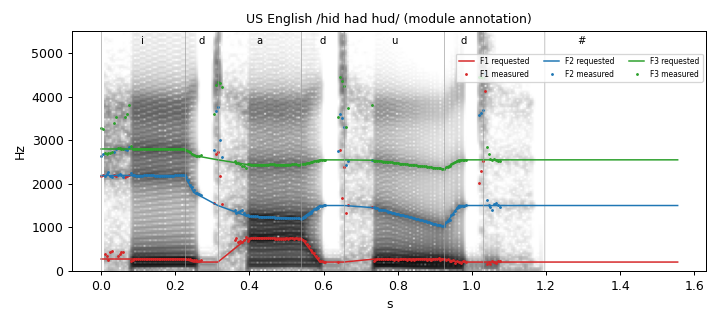
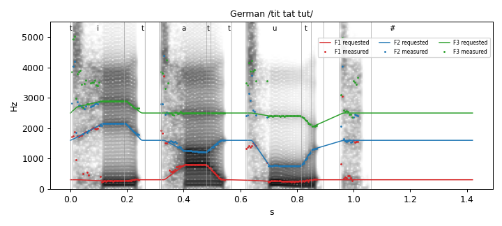
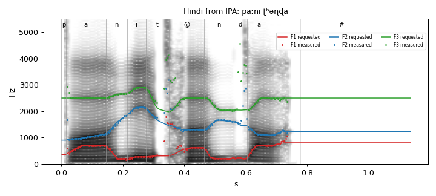
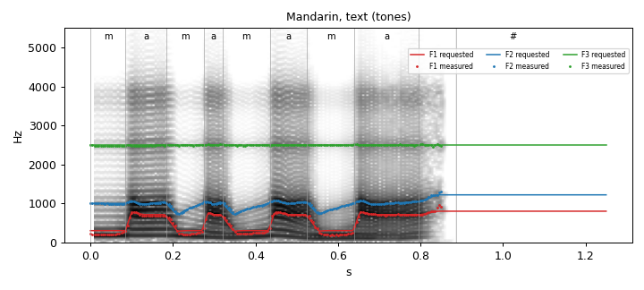
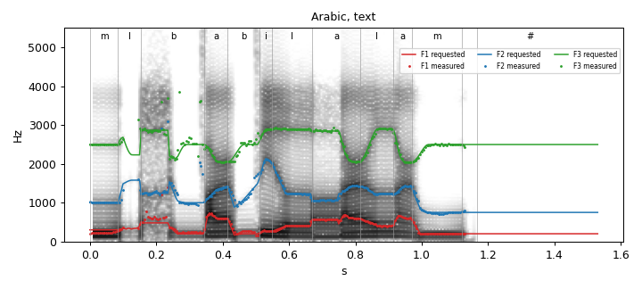
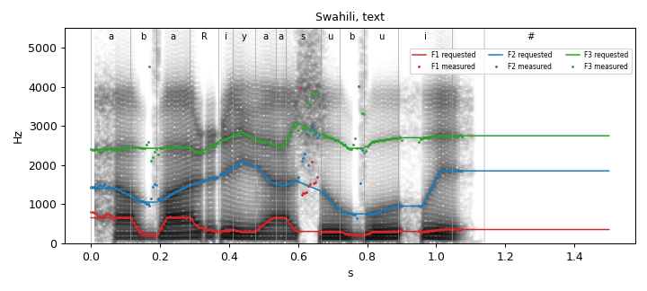
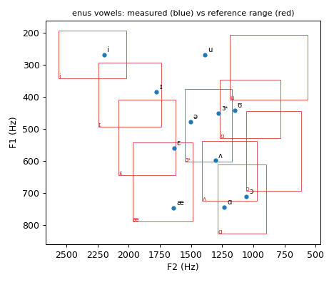
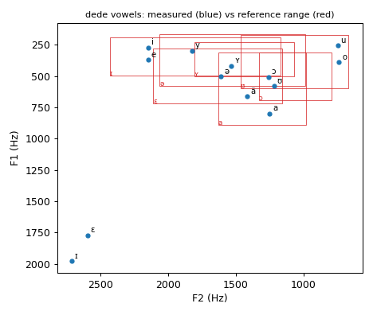
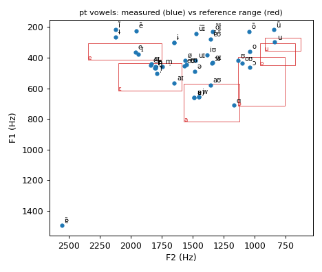

Written 2026-10-05 by docs/tts-extension/harness/report.py. Preset 1 (adult male), 64-bit, 11025 Hz. Levels and checks are defined at the top of report.py; LANGUAGE_STATUS.md holds the same table. Nothing here was judged by ear.
| Tag | Language | Kind | Level | Check A | Check B | ASR | Failure layer |
|---|---|---|---|---|---|---|---|
| ab | Abkhaz | espeak | 2 engine-verified | pass, 0 silent, A2 98% | no reference | ASR unavailable (Whisper large-v3 has no language for this tag) | |
| af | Afrikaans | espeak | 2 engine-verified | pass, 0 silent, A2 99% | no reference | CER 0.32 WER 0.67 | unknown |
| am | Amharic | espeak | 2 engine-verified | pass, 0 silent, A2 100% | no reference | CER 1.43 WER 1.42 | unknown |
| an | Aragonese | espeak | 2 engine-verified | pass, 0 silent, A2 100% | no reference | ASR unavailable (Whisper large-v3 has no language for this tag) | |
| ar | Arabic | espeak | 2 engine-verified | pass, 0 silent, A2 100% | no reference | CER 0.65 WER 0.87 | unknown |
| as | Assamese | espeak | 2 engine-verified | pass, 0 silent, A2 98% | no reference | CER 0.98 WER 1.11 | unknown |
| az | Azerbaijani | espeak | 2 engine-verified | pass, 0 silent, A2 99% | no reference | CER 0.49 WER 0.83 | unknown |
| ba | Bashkir | espeak | 2 engine-verified | pass, 0 silent, A2 100% | no reference | CER 0.92 WER 1.10 | unknown |
| be | Belarusian | espeak | 2 engine-verified | pass, 0 silent, A2 100% | no reference | CER 0.28 WER 0.68 | unknown |
| bg | Bulgarian | espeak | 2 engine-verified | pass, 0 silent, A2 100% | no reference | CER 0.23 WER 0.64 | unknown |
| bn | Bengali | espeak | 2 engine-verified | pass, 0 silent, A2 98% | no reference | CER 0.45 WER 1.00 | unknown |
| bpy | Bishnupriya Manipuri | espeak | 2 engine-verified | pass, 0 silent, A2 98% | no reference | ASR unavailable (Whisper large-v3 has no language for this tag) | |
| bs | Bosnian | espeak | 2 engine-verified | pass, 0 silent, A2 99% | no reference | CER 0.26 WER 0.70 | unknown |
| ca | Catalan | espeak | 2 engine-verified | pass, 0 silent, A2 100% | no reference | CER 0.12 WER 0.24 | |
| ca-ba | Catalan (Balearic) | espeak | 2 engine-verified | pass, 0 silent, A2 100% | no reference | CER 0.19 WER 0.42 | unknown |
| ca-nw | Catalan (North-western) | espeak | 2 engine-verified | pass, 0 silent, A2 100% | no reference | CER 0.13 WER 0.31 | |
| ca-va | Catalan (Valencian) | espeak | 2 engine-verified | pass, 0 silent, A2 100% | no reference | CER 0.12 WER 0.28 | |
| chr | Cherokee | espeak | 2 engine-verified | pass, 0 silent, A2 97% | no reference | ASR unavailable (Whisper large-v3 has no language for this tag) | |
| cmn | Chinese (Mandarin, latin as English) | espeak | 2 engine-verified | pass, 0 silent, A2 92% | no reference | CER 0.66 | stress-or-tone |
| cmn-latn-pinyin | Chinese (Mandarin, latin as Pinyin) | espeak | 2 engine-verified | pass, 0 silent, A2 92% | no reference | ASR unavailable (Whisper writes another script; references not converted yet) | |
| crh | Crimean Tatar | espeak | 2 engine-verified | pass, 0 silent, A2 99% | no reference | ASR unavailable (Whisper large-v3 has no language for this tag) | |
| cs | Czech | espeak | 2 engine-verified | pass, 0 silent, A2 99% | no reference | CER 0.21 WER 0.48 | unknown |
| cv | Chuvash | espeak | 2 engine-verified | pass, 0 silent, A2 100% | no reference | ASR unavailable (Whisper large-v3 has no language for this tag) | |
| cy | Welsh | espeak | 2 engine-verified | pass, 0 silent, A2 100% | no reference | CER 0.66 WER 1.20 | unknown |
| da | Danish | espeak | 2 engine-verified | pass, 0 silent, A2 100% | no reference | CER 0.38 WER 0.77 | unknown |
| dede | German | native | 2 engine-verified | pass, 0 silent, A2 99% | FAIL 15/21 | CER 0.03 WER 0.10 | phoneme values |
| el | Greek | espeak | 2 engine-verified | pass, 0 silent, A2 99% | no reference | CER 0.47 WER 0.70 | unknown |
| en-029 | English (Caribbean) | espeak | 2 engine-verified | pass, 0 silent, A2 100% | FAIL 23/39 | CER 0.07 WER 0.11 | phoneme values |
| en-gb-scotland | English (Scotland) | espeak | 2 engine-verified | pass, 0 silent, A2 100% | FAIL 39/51 | CER 0.13 WER 0.21 | phoneme values |
| en-gb-x-gbclan | English (Lancaster) | espeak | 2 engine-verified | pass, 0 silent, A2 100% | FAIL 19/39 | CER 0.04 WER 0.07 | phoneme values |
| en-gb-x-gbcwmd | English (West Midlands) | espeak | 2 engine-verified | pass, 0 silent, A2 100% | FAIL 19/39 | CER 0.04 WER 0.04 | phoneme values |
| en-gb-x-rp | English (Received Pronunciation) | espeak | 2 engine-verified | pass, 0 silent, A2 100% | FAIL 21/42 | CER 0.03 WER 0.07 | phoneme values |
| en-shaw | English (Shavian alphabet) | espeak | 2 engine-verified | pass, 0 silent, A2 100% | FAIL 26/39 | ASR unavailable (no CC0 / CC BY sentence set has this language) | phoneme values |
| en-us-nyc | English (America, New York City) | espeak | 4 intelligibility-verified | pass, 0 silent, A2 100% | pass 42/45 | CER 0.05 WER 0.07 | |
| engb | British English | native | 4 intelligibility-verified | pass, 0 silent, A2 100% | pass 24/30 | CER 0.00 WER 0.00 | |
| enus | US English | native | 4 intelligibility-verified | pass, 0 silent, A2 100% | pass 30/33 | CER 0.01 WER 0.01 | |
| eo | Esperanto | espeak | 2 engine-verified | pass, 0 silent, A2 100% | no reference | ASR unavailable (Whisper large-v3 has no language for this tag) | |
| eses | Castilian Spanish | native | 2 engine-verified | pass, 0 silent, A2 93% | FAIL 6/10 | CER 0.04 WER 0.15 | phoneme values |
| esus | Latin American Spanish | native | 2 engine-verified | pass, 0 silent, A2 91% | FAIL 5/10 | CER 0.03 WER 0.10 | phoneme values |
| et | Estonian | espeak | 2 engine-verified | pass, 0 silent, A2 100% | no reference | CER 0.23 WER 0.81 | unknown |
| eu | Basque | espeak | 2 engine-verified | pass, 0 silent, A2 100% | no reference | CER 0.15 WER 0.69 | unknown |
| fa | Persian | espeak | 2 engine-verified | pass, 0 silent, A2 99% | no reference | CER 0.53 WER 0.92 | unknown |
| fa-latn | Persian (Pinglish) | espeak | 2 engine-verified | pass, 0 silent, A2 99% | no reference | ASR unavailable (no CC0 / CC BY sentence set has this language) | |
| fi | Finnish | espeak | 2 engine-verified | pass, 0 silent, A2 100% | no reference | CER 0.31 WER 0.81 | unknown |
| fo | Faroese | espeak | 2 engine-verified | pass, 0 silent, A2 100% | no reference | CER 0.54 WER 1.10 | unknown |
| fr-be | French (Belgium) | espeak | 2 engine-verified | pass, 0 silent, A2 100% | no reference | CER 0.40 WER 0.70 | unknown |
| fr-ch | French (Switzerland) | espeak | 2 engine-verified | pass, 0 silent, A2 100% | no reference | CER 0.40 WER 0.70 | unknown |
| frca | Canadian French | native | 2 engine-verified | pass, 0 silent, A2 99% | no reference | CER 0.14 WER 0.24 | |
| frfr | French | native | 2 engine-verified | pass, 0 silent, A2 100% | no reference | CER 0.12 WER 0.30 | |
| ga | Gaelic (Irish) | espeak | 2 engine-verified | pass, 0 silent, A2 100% | no reference | ASR unavailable (Whisper large-v3 has no language for this tag) | |
| gd | Gaelic (Scottish) | espeak | 2 engine-verified | pass, 0 silent, A2 100% | no reference | ASR unavailable (Whisper large-v3 has no language for this tag) | |
| gn | Guarani | espeak | 2 engine-verified | pass, 0 silent, A2 98% | no reference | ASR unavailable (Whisper large-v3 has no language for this tag) | |
| grc | Greek (Ancient) | espeak | 2 engine-verified | pass, 0 silent, A2 100% | no reference | ASR unavailable (Whisper large-v3 has no language for this tag) | |
| gu | Gujarati | espeak | 2 engine-verified | pass, 0 silent, A2 98% | no reference | CER 0.44 WER 0.86 | unknown |
| hak | Hakka Chinese | espeak | 2 engine-verified | pass, 0 silent, A2 100% | no reference | ASR unavailable (Whisper large-v3 has no language for this tag) | |
| haw | Hawaiian | espeak | 2 engine-verified | pass, 0 silent, A2 100% | no reference | CER 0.42 WER 0.89 | unknown |
| he | Hebrew | espeak | 2 engine-verified | pass, 0 silent, A2 100% | no reference | CER 0.65 WER 1.26 | unknown |
| hi | Hindi | espeak | 2 engine-verified | pass, 0 silent, A2 98% | no reference | CER 0.37 WER 0.69 | unknown |
| hr | Croatian | espeak | 2 engine-verified | pass, 0 silent, A2 99% | no reference | CER 0.08 WER 0.32 | |
| ht | Haitian Creole | espeak | 2 engine-verified | pass, 0 silent, A2 99% | no reference | CER 0.25 WER 0.82 | unknown |
| hu | Hungarian | espeak | 2 engine-verified | pass, 0 silent, A2 100% | no reference | CER 0.24 WER 0.69 | unknown |
| hy | Armenian (East Armenia) | espeak | 2 engine-verified | pass, 0 silent, A2 100% | no reference | CER 0.18 WER 0.92 | unknown |
| hyw | Armenian (West Armenia) | espeak | 2 engine-verified | pass, 0 silent, A2 99% | no reference | CER 0.32 WER 0.88 | unknown |
| ia | Interlingua | espeak | 2 engine-verified | pass, 0 silent, A2 100% | no reference | ASR unavailable (Whisper large-v3 has no language for this tag) | |
| id | Indonesian | espeak | 2 engine-verified | pass, 0 silent, A2 100% | no reference | CER 0.10 WER 0.20 | |
| io | Ido | espeak | 2 engine-verified | pass, 0 silent, A2 100% | no reference | ASR unavailable (Whisper large-v3 has no language for this tag) | |
| is | Icelandic | espeak | 2 engine-verified | pass, 0 silent, A2 99% | no reference | CER 0.58 WER 1.37 | unknown |
| itit | Italian | native | 2 engine-verified | pass, 0 silent, A2 100% | no reference | CER 0.01 WER 0.05 | |
| jajp | Japanese | native | 2 engine-verified | pass, 0 silent, A2 100% | no reference | CER 0.15 | stress-or-tone |
| jbo | Lojban | espeak | 2 engine-verified | pass, 0 silent, A2 100% | no reference | ASR unavailable (Whisper large-v3 has no language for this tag) | |
| ka | Georgian | espeak | 2 engine-verified | pass, 0 silent, A2 100% | no reference | CER 0.36 WER 1.03 | unknown |
| kaa | Karakalpak | espeak | 2 engine-verified | pass, 0 silent, A2 99% | no reference | ASR unavailable (Whisper large-v3 has no language for this tag) | |
| kk | Kazakh | espeak | 2 engine-verified | pass, 0 silent, A2 100% | no reference | CER 0.39 WER 0.88 | unknown |
| kl | Greenlandic | espeak | 2 engine-verified | pass, 0 silent, A2 100% | no reference | ASR unavailable (Whisper large-v3 has no language for this tag) | |
| kn | Kannada | espeak | 2 engine-verified | pass, 0 silent, A2 99% | no reference | CER 0.35 WER 1.03 | unknown |
| ko | Korean | espeak | 2 engine-verified | pass, 0 silent, A2 100% | no reference | CER 0.56 WER 1.07 | unknown |
| kok | Konkani | espeak | 2 engine-verified | pass, 0 silent, A2 98% | no reference | ASR unavailable (Whisper large-v3 has no language for this tag) | |
| ku | Kurdish | espeak | 2 engine-verified | pass, 0 silent, A2 99% | no reference | ASR unavailable (Whisper large-v3 has no language for this tag) | |
| ky | Kyrgyz | espeak | 2 engine-verified | pass, 0 silent, A2 100% | no reference | ASR unavailable (Whisper large-v3 has no language for this tag) | |
| la | Latin | espeak | 2 engine-verified | pass, 0 silent, A2 100% | no reference | CER 0.11 WER 0.45 | |
| lb | Luxembourgish | espeak | 2 engine-verified | pass, 0 silent, A2 99% | no reference | CER 0.57 WER 1.05 | unknown |
| lfn | Lingua Franca Nova | espeak | 2 engine-verified | pass, 0 silent, A2 100% | no reference | ASR unavailable (Whisper large-v3 has no language for this tag) | |
| lij | Ligurian | espeak | 2 engine-verified | pass, 0 silent, A2 99% | no reference | ASR unavailable (Whisper large-v3 has no language for this tag) | |
| lt | Lithuanian | espeak | 2 engine-verified | pass, 0 silent, A2 100% | no reference | CER 0.42 WER 0.86 | unknown |
| ltg | Latgalian | espeak | 2 engine-verified | pass, 0 silent, A2 100% | no reference | ASR unavailable (Whisper large-v3 has no language for this tag) | |
| lv | Latvian | espeak | 2 engine-verified | pass, 0 silent, A2 100% | no reference | CER 0.36 WER 0.78 | unknown |
| mi | Māori | espeak | 2 engine-verified | pass, 0 silent, A2 100% | no reference | CER 0.33 WER 0.81 | unknown |
| mk | Macedonian | espeak | 2 engine-verified | pass, 0 silent, A2 99% | no reference | CER 0.20 WER 0.68 | unknown |
| ml | Malayalam | espeak | 2 engine-verified | pass, 0 silent, A2 99% | no reference | CER 0.94 WER 1.46 | unknown |
| mn | Mongolian | espeak | 2 engine-verified | pass, 0 silent, A2 99% | no reference | CER 0.42 WER 1.03 | unknown |
| mn-f | Ankhmaa | espeak | 2 engine-verified | pass, 0 silent, A2 99% | no reference | CER 0.42 WER 1.03 | unknown |
| mr | Marathi | espeak | 2 engine-verified | pass, 0 silent, A2 98% | no reference | CER 0.73 WER 1.31 | unknown |
| ms | Malay | espeak | 2 engine-verified | pass, 0 silent, A2 100% | no reference | CER 0.15 WER 0.32 | |
| mt | Maltese | espeak | 2 engine-verified | pass, 0 silent, A2 100% | no reference | CER 0.51 WER 1.05 | unknown |
| mto | Totontepec Mixe | espeak | 2 engine-verified | pass, 0 silent, A2 100% | no reference | ASR unavailable (Whisper large-v3 has no language for this tag) | |
| my | Myanmar (Burmese) | espeak | 2 engine-verified | pass, 0 silent, A2 100% | no reference | CER 1.13 | stress-or-tone |
| nb | Norwegian Bokmål | espeak | 2 engine-verified | pass, 0 silent, A2 100% | no reference | CER 0.31 WER 0.68 | unknown |
| nci | Nahuatl (Classical) | espeak | 2 engine-verified | pass, 0 silent, A2 100% | no reference | ASR unavailable (Whisper large-v3 has no language for this tag) | |
| ne | Nepali | espeak | 2 engine-verified | pass, 0 silent, A2 98% | no reference | CER 0.42 WER 1.00 | unknown |
| nl | Dutch | espeak | 2 engine-verified | pass, 0 silent, A2 100% | no reference | CER 0.27 WER 0.60 | unknown |
| nog | Nogai | espeak | 2 engine-verified | pass, 0 silent, A2 99% | no reference | ASR unavailable (Whisper large-v3 has no language for this tag) | |
| om | Oromo | espeak | 2 engine-verified | pass, 0 silent, A2 100% | no reference | ASR unavailable (Whisper large-v3 has no language for this tag) | |
| or | Oriya | espeak | 2 engine-verified | pass, 0 silent, A2 98% | no reference | ASR unavailable (Whisper large-v3 has no language for this tag) | |
| pa | Punjabi | espeak | 2 engine-verified | pass, 0 silent, A2 98% | no reference | CER 0.66 WER 0.98 | stress-or-tone |
| pap | Papiamento | espeak | 2 engine-verified | pass, 0 silent, A2 100% | no reference | ASR unavailable (Whisper large-v3 has no language for this tag) | |
| pdc | Pennsylvania Dutch (Lancaster) | espeak | 2 engine-verified | pass, 0 silent, A2 99% | no reference | ASR unavailable (Whisper large-v3 has no language for this tag) | |
| pdc-x-lehigh | Pennsylvania Dutch (Lehigh) | espeak | 2 engine-verified | pass, 0 silent, A2 99% | no reference | ASR unavailable (Whisper large-v3 has no language for this tag) | |
| pdc-x-midwest | Pennsylvania Dutch (Midwest) | espeak | 2 engine-verified | pass, 0 silent, A2 99% | no reference | ASR unavailable (Whisper large-v3 has no language for this tag) | |
| piqd | Klingon | espeak | 2 engine-verified | pass, 0 silent, A2 100% | no reference | ASR unavailable (Whisper large-v3 has no language for this tag) | |
| plpl | Polish (experimental) | native | 2 engine-verified | pass, 0 silent, A2 100% | no reference | CER 0.09 WER 0.32 | |
| ps | Pashto | espeak | 2 engine-verified | pass, 0 silent, A2 100% | no reference | CER 0.61 WER 1.10 | unknown |
| ps-x-northwest | Pashto (Northwestern) | espeak | 2 engine-verified | pass, 0 silent, A2 100% | no reference | CER 0.59 WER 1.10 | unknown |
| ps-x-southeast | Pashto (Southeastern) | espeak | 2 engine-verified | pass, 0 silent, A2 100% | no reference | CER 0.62 WER 1.12 | unknown |
| ps-x-yusufzai | Pashto (Yusufzai) | espeak | 2 engine-verified | pass, 0 silent, A2 100% | no reference | CER 0.62 WER 1.08 | unknown |
| pt | Portuguese (Portugal) | espeak | 4 intelligibility-verified | pass, 0 silent, A2 98% | pass 17/18 | CER 0.06 WER 0.14 | |
| pt-br | Portuguese (Brazil) | espeak | 4 intelligibility-verified | pass, 0 silent, A2 98% | pass 19/21 | CER 0.06 WER 0.13 | |
| py | Pyash | espeak | 2 engine-verified | pass, 0 silent, A2 100% | no reference | ASR unavailable (Whisper large-v3 has no language for this tag) | |
| qdb | Lang Belta | espeak | 2 engine-verified | pass, 0 silent, A2 100% | no reference | ASR unavailable (Whisper large-v3 has no language for this tag) | |
| qu | Quechua | espeak | 1 draft | FAIL, 1 silent, A2 100% | no reference | ASR unavailable (Whisper large-v3 has no language for this tag) | phoneme values |
| quc | K'iche' | espeak | 2 engine-verified | pass, 0 silent, A2 100% | no reference | ASR unavailable (Whisper large-v3 has no language for this tag) | |
| qya | Quenya | espeak | 2 engine-verified | pass, 0 silent, A2 100% | no reference | ASR unavailable (Whisper large-v3 has no language for this tag) | |
| ro | Romanian | espeak | 2 engine-verified | pass, 0 silent, A2 100% | no reference | CER 0.13 WER 0.35 | |
| ru | Russian | espeak | 2 engine-verified | pass, 0 silent, A2 100% | no reference | CER 0.22 WER 0.58 | unknown |
| ru-cl | Russian (Classic) | espeak | 2 engine-verified | pass, 0 silent, A2 100% | no reference | CER 0.22 WER 0.58 | unknown |
| ru-lv | Russian (Latvia) | espeak | 2 engine-verified | pass, 0 silent, A2 100% | no reference | CER 0.27 WER 0.61 | unknown |
| rup | Aromanian | espeak | 2 engine-verified | pass, 0 silent, A2 100% | no reference | ASR unavailable (Whisper large-v3 has no language for this tag) | |
| sd | Sindhi | espeak | 2 engine-verified | pass, 0 silent, A2 98% | no reference | CER 1.05 WER 1.33 | unknown |
| shn | Shan (Tai Yai) | espeak | 2 engine-verified | pass, 0 silent, A2 98% | no reference | ASR unavailable (Whisper large-v3 has no language for this tag) | |
| si | Sinhala | espeak | 2 engine-verified | pass, 0 silent, A2 98% | no reference | CER 1.03 WER 1.16 | unknown |
| sjn | Sindarin | espeak | 2 engine-verified | pass, 0 silent, A2 99% | no reference | ASR unavailable (Whisper large-v3 has no language for this tag) | |
| sk | Slovak | espeak | 2 engine-verified | pass, 0 silent, A2 99% | no reference | CER 0.25 WER 0.60 | unknown |
| sl | Slovenian | espeak | 2 engine-verified | pass, 0 silent, A2 100% | no reference | CER 0.35 WER 0.42 | unknown |
| smj | Lule Saami | espeak | 2 engine-verified | pass, 0 silent, A2 100% | no reference | ASR unavailable (Whisper large-v3 has no language for this tag) | |
| sq | Albanian | espeak | 2 engine-verified | pass, 0 silent, A2 100% | no reference | CER 0.20 WER 0.56 | unknown |
| sr | Serbian | espeak | 2 engine-verified | pass, 0 silent, A2 99% | no reference | CER 0.17 WER 0.43 | unknown |
| sv | Swedish | espeak | 2 engine-verified | pass, 0 silent, A2 100% | no reference | CER 0.27 WER 0.74 | unknown |
| sw | Swahili | espeak | 2 engine-verified | pass, 0 silent, A2 100% | no reference | CER 0.20 WER 0.75 | unknown |
| ta | Tamil | espeak | 2 engine-verified | pass, 0 silent, A2 98% | no reference | CER 0.48 WER 1.02 | unknown |
| te | Telugu | espeak | 2 engine-verified | pass, 0 silent, A2 98% | no reference | CER 0.47 WER 1.10 | unknown |
| th | Thai | espeak | 2 engine-verified | pass, 0 silent, A2 100% | no reference | CER 1.22 | unknown |
| ti | Tigrinya | espeak | 2 engine-verified | pass, 0 silent, A2 99% | no reference | ASR unavailable (Whisper large-v3 has no language for this tag) | |
| tk | Turkmen | espeak | 2 engine-verified | pass, 0 silent, A2 100% | no reference | CER 0.57 WER 1.17 | unknown |
| tn | Setswana | espeak | 2 engine-verified | pass, 0 silent, A2 100% | no reference | ASR unavailable (Whisper large-v3 has no language for this tag) | |
| tr | Turkish | espeak | 2 engine-verified | pass, 0 silent, A2 100% | no reference | CER 0.28 WER 0.49 | unknown |
| tt | Tatar | espeak | 2 engine-verified | pass, 0 silent, A2 100% | no reference | CER 0.59 WER 1.31 | unknown |
| ug | Uyghur | espeak | 2 engine-verified | pass, 0 silent, A2 100% | no reference | ASR unavailable (Whisper large-v3 has no language for this tag) | |
| uk | Ukrainian | espeak | 2 engine-verified | pass, 0 silent, A2 100% | no reference | CER 0.24 WER 0.58 | unknown |
| ur | Urdu | espeak | 2 engine-verified | pass, 0 silent, A2 98% | no reference | CER 0.65 WER 1.00 | unknown |
| uz | Uzbek | espeak | 2 engine-verified | pass, 0 silent, A2 99% | no reference | CER 0.46 WER 1.12 | unknown |
| vi | Vietnamese (Northern) | espeak | 2 engine-verified | pass, 0 silent, A2 100% | no reference | CER 1.27 WER 1.33 | stress-or-tone |
| vi-vn-x-central | Vietnamese (Central) | espeak | 2 engine-verified | pass, 0 silent, A2 99% | no reference | CER 1.63 WER 1.61 | stress-or-tone |
| vi-vn-x-south | Vietnamese (Southern) | espeak | 2 engine-verified | pass, 0 silent, A2 100% | no reference | CER 1.49 WER 1.50 | stress-or-tone |
| xex | xextan-test | espeak | 2 engine-verified | pass, 0 silent, A2 98% | no reference | ASR unavailable (Whisper large-v3 has no language for this tag) | |
| yue | Chinese (Cantonese) | espeak | 2 engine-verified | pass, 0 silent, A2 100% | no reference | CER 1.29 | stress-or-tone |
| yue-latn-jyutping | Chinese (Cantonese, latin as Jyutping) | espeak | 2 engine-verified | pass, 0 silent, A2 100% | no reference | ASR unavailable (Whisper writes another script; references not converted yet) |
Spectrograms: lines are the formants the engine asked the synthesiser for (its frames), dots the formants measured from the sound. Vowel charts: blue dots are measured vowels, red boxes the cited reference ranges for the same IPA symbol.









| Tag | Case | IPA | Measure | Value | Range | Source |
|---|---|---|---|---|---|---|
| dede | m|E | ɛ | F1_50_hz | 1774 | 280 .. 716 | paetzold_simpson1997 (de-DE) |
| dede | m|E | ɛ | F2_50_hz | 2595 | 1160 .. 2112 | paetzold_simpson1997 (de-DE) |
| dede | m|E | ɛ | F3_50_hz | 3560 | 1849 .. 3049 | paetzold_simpson1997 (de-DE) |
| dede | m|I | ɪ | F1_50_hz | 1980 | 188 .. 496 | paetzold_simpson1997 (de-DE) |
| dede | m|I | ɪ | F2_50_hz | 2715 | 1166 .. 2430 | paetzold_simpson1997 (de-DE) |
| dede | m|I | ɪ | F3_50_hz | 3528 | 1824 .. 3116 | paetzold_simpson1997 (de-DE) |
| en-029 | v|I | ɪ | F1_50_hz | 1830 | 293 .. 492 | petersonbarney1952_data (en-US) |
| en-029 | v|I | ɪ | F2_50_hz | 2438 | 1742 .. 2245 | petersonbarney1952_data (en-US) |
| en-029 | v|I | ɪ | F3_50_hz | 3630 | 2320 .. 2817 | petersonbarney1952_data (en-US) |
| en-029 | v|I2 | ɪ | F1_50_hz | 1830 | 293 .. 492 | petersonbarney1952_data (en-US) |
| en-029 | v|I2 | ɪ | F2_50_hz | 2438 | 1742 .. 2245 | petersonbarney1952_data (en-US) |
| en-029 | v|I2 | ɪ | F3_50_hz | 3630 | 2320 .. 2817 | petersonbarney1952_data (en-US) |
| en-029 | v|O | ɔ | F2_50_hz | 1101 | 614 .. 1059 | petersonbarney1952_data (en-US) |
| en-029 | v|O2 | ɔ | F2_50_hz | 1269 | 614 .. 1059 | petersonbarney1952_data (en-US) |
| en-029 | v|U | ʊ | F1_50_hz | 529 | 346 .. 528 | petersonbarney1952_data (en-US) |
| en-029 | v|e | e | F1_50_hz | 1833 | 394 .. 558 | hillenbrand1995 (en-US) |
| en-029 | v|e | e | F2_50_hz | 2700 | 1811 .. 2369 | hillenbrand1995 (en-US) |
| en-029 | v|e | e | F3_50_hz | 3625 | 2382 .. 3002 | hillenbrand1995 (en-US) |
| en-029 | v|i | i | F1_50_hz | 2001 | 193 .. 340 | petersonbarney1952_data (en-US) |
| en-029 | v|i | i | F2_50_hz | 2664 | 2021 .. 2566 | petersonbarney1952_data (en-US) |
| en-029 | v|i | i | F3_50_hz | 3686 | 2567 .. 3307 | petersonbarney1952_data (en-US) |
| en-029 | v|u | u | F1_50_hz | 458 | 207 .. 408 | petersonbarney1952_data (en-US) |
| en-gb-scotland | l|r- | ɹ | F1_50_hz | 316 | 343 .. 531 | hagiwara1995 (en-US) |
| en-gb-scotland | l|r- | ɹ | F3_50_hz | 2470 | 1556 .. 1980 | hagiwara1995 (en-US) |
| en-gb-scotland | v|3: | e | F1_50_hz | 313 | 394 .. 558 | hillenbrand1995 (en-US) |
| en-gb-scotland | v|O2 | ɔ | F2_50_hz | 1214 | 614 .. 1059 | petersonbarney1952_data (en-US) |
| en-gb-scotland | v|O@ | ɔ | F1_50_hz | 716 | 444 .. 692 | petersonbarney1952_data (en-US) |
| en-gb-scotland | v|e | e | F1_50_hz | 313 | 394 .. 558 | hillenbrand1995 (en-US) |
| en-gb-scotland | v|e@ | e | F2_50_hz | 1744 | 1811 .. 2369 | hillenbrand1995 (en-US) |
| en-gb-scotland | v|i | e | F1_50_hz | 313 | 394 .. 558 | hillenbrand1995 (en-US) |
| en-gb-scotland | v|o | o | F1_50_hz | 590 | 412 .. 583 | hillenbrand1995 (en-US) |
| en-gb-scotland | v|u | u | F1_50_hz | 936 | 207 .. 408 | petersonbarney1952_data (en-US) |
| en-gb-scotland | v|u | u | F2_50_hz | 2248 | 563 .. 1189 | petersonbarney1952_data (en-US) |
| en-gb-scotland | v|u | u | F3_50_hz | 3874 | 1741 .. 2737 | petersonbarney1952_data (en-US) |
| en-gb-x-gbclan | l|r- | ɹ | F1_50_hz | 313 | 343 .. 531 | hagiwara1995 (en-US) |
| en-gb-x-gbclan | v|I | ɪ | F1_50_hz | 1836 | 293 .. 492 | petersonbarney1952_data (en-US) |
| en-gb-x-gbclan | v|I | ɪ | F2_50_hz | 2439 | 1742 .. 2245 | petersonbarney1952_data (en-US) |
| en-gb-x-gbclan | v|I | ɪ | F3_50_hz | 3731 | 2320 .. 2817 | petersonbarney1952_data (en-US) |
| en-gb-x-gbclan | v|I2 | ɪ | F1_50_hz | 1836 | 293 .. 492 | petersonbarney1952_data (en-US) |
| en-gb-x-gbclan | v|I2 | ɪ | F2_50_hz | 2439 | 1742 .. 2245 | petersonbarney1952_data (en-US) |
| en-gb-x-gbclan | v|I2 | ɪ | F3_50_hz | 3731 | 2320 .. 2817 | petersonbarney1952_data (en-US) |
| en-gb-x-gbclan | v|O | ɔ | F2_50_hz | 1089 | 614 .. 1059 | petersonbarney1952_data (en-US) |
| en-gb-x-gbclan | v|O2 | ɔ | F2_50_hz | 1273 | 614 .. 1059 | petersonbarney1952_data (en-US) |
| en-gb-x-gbclan | v|U | ʊ | F1_50_hz | 529 | 346 .. 528 | petersonbarney1952_data (en-US) |
| en-gb-x-gbclan | v|V | ʊ | F1_50_hz | 529 | 346 .. 528 | petersonbarney1952_data (en-US) |
| en-gb-x-gbclan | v|e | e | F1_50_hz | 1838 | 394 .. 558 | hillenbrand1995 (en-US) |
| en-gb-x-gbclan | v|e | e | F2_50_hz | 2726 | 1811 .. 2369 | hillenbrand1995 (en-US) |
| en-gb-x-gbclan | v|e | e | F3_50_hz | 3674 | 2382 .. 3002 | hillenbrand1995 (en-US) |
| en-gb-x-gbclan | v|i | i | F1_50_hz | 1999 | 193 .. 340 | petersonbarney1952_data (en-US) |
| en-gb-x-gbclan | v|i | i | F2_50_hz | 2622 | 2021 .. 2566 | petersonbarney1952_data (en-US) |
| en-gb-x-gbclan | v|i | i | F3_50_hz | 3788 | 2567 .. 3307 | petersonbarney1952_data (en-US) |
| en-gb-x-gbclan | v|u | u | F1_50_hz | 1059 | 207 .. 408 | petersonbarney1952_data (en-US) |
| en-gb-x-gbclan | v|u | u | F2_50_hz | 2238 | 563 .. 1189 | petersonbarney1952_data (en-US) |
| en-gb-x-gbclan | v|u | u | F3_50_hz | 3587 | 1741 .. 2737 | petersonbarney1952_data (en-US) |
| en-gb-x-gbcwmd | l|r- | ɹ | F1_50_hz | 302 | 343 .. 531 | hagiwara1995 (en-US) |
| en-gb-x-gbcwmd | v|I | ɪ | F1_50_hz | 1836 | 293 .. 492 | petersonbarney1952_data (en-US) |
| en-gb-x-gbcwmd | v|I | ɪ | F2_50_hz | 2439 | 1742 .. 2245 | petersonbarney1952_data (en-US) |
| en-gb-x-gbcwmd | v|I | ɪ | F3_50_hz | 3731 | 2320 .. 2817 | petersonbarney1952_data (en-US) |
| en-gb-x-gbcwmd | v|I2 | ɪ | F1_50_hz | 1836 | 293 .. 492 | petersonbarney1952_data (en-US) |
| en-gb-x-gbcwmd | v|I2 | ɪ | F2_50_hz | 2439 | 1742 .. 2245 | petersonbarney1952_data (en-US) |
| en-gb-x-gbcwmd | v|I2 | ɪ | F3_50_hz | 3731 | 2320 .. 2817 | petersonbarney1952_data (en-US) |
| en-gb-x-gbcwmd | v|O | ɔ | F2_50_hz | 1089 | 614 .. 1059 | petersonbarney1952_data (en-US) |
| en-gb-x-gbcwmd | v|O2 | ɔ | F2_50_hz | 1273 | 614 .. 1059 | petersonbarney1952_data (en-US) |
| en-gb-x-gbcwmd | v|U | ʊ | F1_50_hz | 529 | 346 .. 528 | petersonbarney1952_data (en-US) |
| en-gb-x-gbcwmd | v|V | ʊ | F1_50_hz | 529 | 346 .. 528 | petersonbarney1952_data (en-US) |
| en-gb-x-gbcwmd | v|e | e | F1_50_hz | 1838 | 394 .. 558 | hillenbrand1995 (en-US) |
| en-gb-x-gbcwmd | v|e | e | F2_50_hz | 2726 | 1811 .. 2369 | hillenbrand1995 (en-US) |
| en-gb-x-gbcwmd | v|e | e | F3_50_hz | 3674 | 2382 .. 3002 | hillenbrand1995 (en-US) |
| en-gb-x-gbcwmd | v|i | i | F1_50_hz | 1999 | 193 .. 340 | petersonbarney1952_data (en-US) |
| en-gb-x-gbcwmd | v|i | i | F2_50_hz | 2622 | 2021 .. 2566 | petersonbarney1952_data (en-US) |
| en-gb-x-gbcwmd | v|i | i | F3_50_hz | 3788 | 2567 .. 3307 | petersonbarney1952_data (en-US) |
| en-gb-x-gbcwmd | v|u | u | F1_50_hz | 1059 | 207 .. 408 | petersonbarney1952_data (en-US) |
| en-gb-x-gbcwmd | v|u | u | F2_50_hz | 2238 | 563 .. 1189 | petersonbarney1952_data (en-US) |
| en-gb-x-gbcwmd | v|u | u | F3_50_hz | 3587 | 1741 .. 2737 | petersonbarney1952_data (en-US) |
| en-gb-x-rp | l|r- | ɹ | F1_50_hz | 311 | 343 .. 531 | hagiwara1995 (en-US) |
| en-gb-x-rp | v|I | ɪ | F1_50_hz | 1661 | 293 .. 492 | petersonbarney1952_data (en-US) |
| en-gb-x-rp | v|I | ɪ | F2_50_hz | 2455 | 1742 .. 2245 | petersonbarney1952_data (en-US) |
| en-gb-x-rp | v|I | ɪ | F3_50_hz | 3725 | 2320 .. 2817 | petersonbarney1952_data (en-US) |
| en-gb-x-rp | v|I2 | ɪ | F1_50_hz | 1661 | 293 .. 492 | petersonbarney1952_data (en-US) |
| en-gb-x-rp | v|I2 | ɪ | F2_50_hz | 2455 | 1742 .. 2245 | petersonbarney1952_data (en-US) |
| en-gb-x-rp | v|I2 | ɪ | F3_50_hz | 3725 | 2320 .. 2817 | petersonbarney1952_data (en-US) |
| en-gb-x-rp | v|O | ɔ | F2_50_hz | 1175 | 614 .. 1059 | petersonbarney1952_data (en-US) |
| en-gb-x-rp | v|O2 | ɔ | F2_50_hz | 1273 | 614 .. 1059 | petersonbarney1952_data (en-US) |
| en-gb-x-rp | v|U | ʊ | F2_50_hz | 1343 | 780 .. 1267 | petersonbarney1952_data (en-US) |
| en-gb-x-rp | v|V | ʌ | F1_50_hz | 740 | 537 .. 724 | petersonbarney1952_data (en-US) |
| en-gb-x-rp | v|V | ʌ | F3_50_hz | 2724 | 2044 .. 2710 | petersonbarney1952_data (en-US) |
| en-gb-x-rp | v|e | e | F1_50_hz | 571 | 394 .. 558 | hillenbrand1995 (en-US) |
| en-gb-x-rp | v|e | e | F2_50_hz | 1599 | 1811 .. 2369 | hillenbrand1995 (en-US) |
| en-gb-x-rp | v|e | e | F3_50_hz | 2374 | 2382 .. 3002 | hillenbrand1995 (en-US) |
| en-gb-x-rp | v|i | ɪ | F1_50_hz | 1661 | 293 .. 492 | petersonbarney1952_data (en-US) |
| en-gb-x-rp | v|i | ɪ | F2_50_hz | 2455 | 1742 .. 2245 | petersonbarney1952_data (en-US) |
| en-gb-x-rp | v|i | ɪ | F3_50_hz | 3725 | 2320 .. 2817 | petersonbarney1952_data (en-US) |
| en-gb-x-rp | v|u | u | F1_50_hz | 1360 | 207 .. 408 | petersonbarney1952_data (en-US) |
| en-gb-x-rp | v|u | u | F2_50_hz | 2273 | 563 .. 1189 | petersonbarney1952_data (en-US) |
| en-gb-x-rp | v|u | u | F3_50_hz | 3582 | 1741 .. 2737 | petersonbarney1952_data (en-US) |
| en-shaw | l|r- | ɹ | F1_50_hz | 313 | 343 .. 531 | hagiwara1995 (en-US) |
| en-shaw | v|I | ɪ | F2_50_hz | 1644 | 1742 .. 2245 | petersonbarney1952_data (en-US) |
| en-shaw | v|I2 | ɪ | F2_50_hz | 1644 | 1742 .. 2245 | petersonbarney1952_data (en-US) |
| en-shaw | v|O | ɔ | F1_50_hz | 407 | 444 .. 692 | petersonbarney1952_data (en-US) |
| en-shaw | v|O | ɔ | F2_50_hz | 1070 | 614 .. 1059 | petersonbarney1952_data (en-US) |
| en-shaw | v|O2 | ɔ | F2_50_hz | 1153 | 614 .. 1059 | petersonbarney1952_data (en-US) |
| en-shaw | v|U | ʊ | F1_50_hz | 335 | 346 .. 528 | petersonbarney1952_data (en-US) |
| en-shaw | v|U | ʊ | F2_50_hz | 1274 | 780 .. 1267 | petersonbarney1952_data (en-US) |
| en-shaw | v|e | e | F2_50_hz | 1596 | 1811 .. 2369 | hillenbrand1995 (en-US) |
| en-shaw | v|i | i | F2_50_hz | 1998 | 2021 .. 2566 | petersonbarney1952_data (en-US) |
| en-shaw | v|i | i | F3_50_hz | 2512 | 2567 .. 3307 | petersonbarney1952_data (en-US) |
| en-shaw | v|o | o | F1_50_hz | 412 | 412 .. 583 | hillenbrand1995 (en-US) |
| en-shaw | v|u | u | F2_50_hz | 1301 | 563 .. 1189 | petersonbarney1952_data (en-US) |
| en-us-nyc | l|r- | ɹ | F3_50_hz | 1986 | 1556 .. 1980 | hagiwara1995 (en-US) |
| en-us-nyc | v|O | ɔ | F1_50_hz | 696 | 444 .. 692 | petersonbarney1952_data (en-US) |
| en-us-nyc | v|O2 | ɔ | F1_50_hz | 696 | 444 .. 692 | petersonbarney1952_data (en-US) |
| engb | m|A | æ | F2_50_hz | 1484 | 1485 .. 1969 | petersonbarney1952_data (en-US) |
| engb | m|i | i | F3_50_hz | 2503 | 2567 .. 3307 | petersonbarney1952_data (en-US) |
| engb | m|r | ɹ | F1_50_hz | 650 | 343 .. 531 | hagiwara1995 (en-US) |
| engb | m|r | ɹ | F2_50_hz | 1099 | 1138 .. 1646 | hagiwara1995 (en-US) |
| engb | m|r | ɹ | F3_50_hz | 2704 | 1556 .. 1980 | hagiwara1995 (en-US) |
| engb | m|u | u | F2_50_hz | 1483 | 563 .. 1189 | petersonbarney1952_data (en-US) |
| enus | m|c | ɔ | F1_50_hz | 710 | 444 .. 692 | petersonbarney1952_data (en-US) |
| enus | m|r | ɹ | F1_50_hz | 534 | 343 .. 531 | hagiwara1995 (en-US) |
| enus | m|u | u | F2_50_hz | 1390 | 563 .. 1189 | petersonbarney1952_data (en-US) |
| eses | m|i | i | F1_50_hz | 272 | 284 .. 376 | chladkova2011 (es-ES) |
| eses | m|i | i | F2_50_hz | 1905 | 2010 .. 2397 | chladkova2011 (es-ES) |
| eses | m|u | u | F1_50_hz | 292 | 326 .. 400 | chladkova2011 (es-ES) |
| eses | m|u | u | F2_50_hz | 952 | 723 .. 883 | chladkova2011 (es-ES) |
| esus | m|i | i | F1_50_hz | 268 | 284 .. 376 | chladkova2011 (es-ES) |
| esus | m|i | i | F2_50_hz | 1901 | 2010 .. 2397 | chladkova2011 (es-ES) |
| esus | m|o | o | F2_50_hz | 1081 | 934 .. 1076 | chladkova2011 (es-ES) |
| esus | m|u | u | F1_50_hz | 291 | 326 .. 400 | chladkova2011 (es-ES) |
| esus | m|u | u | F2_50_hz | 960 | 723 .. 883 | chladkova2011 (es-ES) |
| pt | v|o | o | F2_50_hz | 1043 | 674 .. 959 | escudero2009 (pt-BR) |
| pt-br | v|o | o | F2_50_hz | 1042 | 674 .. 959 | escudero2009 (pt-BR) |
| pt-br | v|u | u | F2_50_hz | 1091 | 629 .. 921 | escudero2009 (pt-BR) |